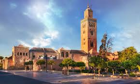
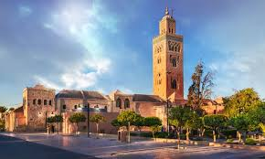

Known as the "Red City," it is one of the most famous tourist destinations in Morocco
Nicknamed the "Blue City" because of its blue-painted walls. It is located in northern Morocco in the Rif Mountains
A perfect destination for adventure lovers, located in the Sahara Desert. Merzouga is known for its golden sand dunes
One of the oldest Islamic cities in the world and home to the oldest university (Al-Qarawiyyin University)